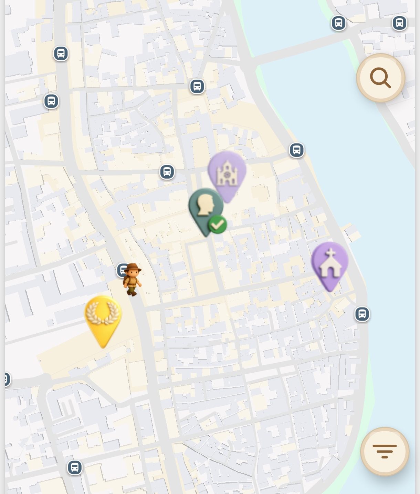
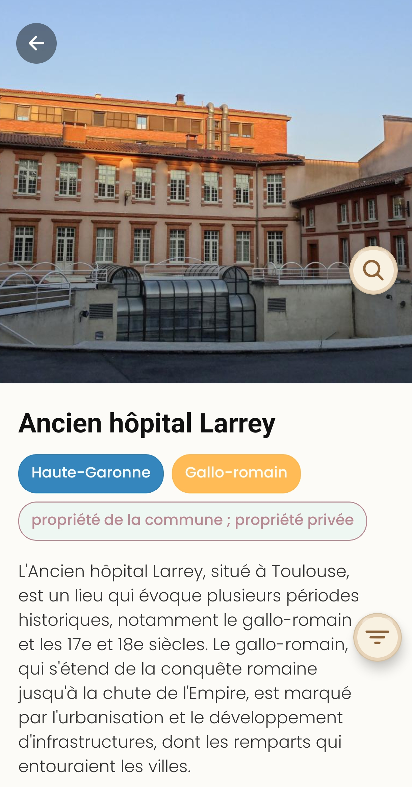

Voir l'essentiel immédiatement
La carte et les fiches permettent d'identifier les lieux incontournables d'un quartier ou d'un centre-ville en quelques secondes.
Idéal pour une balade spontanée, une sortie du dimanche ou un week-end sur place.
ExploGo transforme le tourisme de proximité en expérience simple et vivante : repérez les lieux clés autour de vous, apprenez des anecdotes locales, puis partagez vos découvertes et le patrimoine français avec vos amis grâce au fil d'actualité.

En un regard
Repérez les incontournables
Monuments, places, bâtiments remarquables et lieux à découvrir à proximité.
Après la visite
Publiez vos découvertes
Un fil d'actualité pour montrer ce que vous avez appris et donner envie aux autres.
Pourquoi cette page ?
L'application aide à comprendre rapidement ce qu'il y a à voir autour de soi, pour transformer une promenade en vraie découverte culturelle.
La carte et les fiches permettent d'identifier les lieux incontournables d'un quartier ou d'un centre-ville en quelques secondes.
Idéal pour une balade spontanée, une sortie du dimanche ou un week-end sur place.
En montrant ce qu'un lieu représente, ExploGo rend la ville plus lisible, plus concrète et plus attractive pour les habitants eux-mêmes.
On ne passe plus devant un monument sans savoir pourquoi il compte.
Le tourisme interne valorise ce qui a toujours été là : places, monuments, bâtiments historiques, traces d'événements ou de personnages qui racontent la ville.
Une manière simple de soutenir la curiosité locale et le patrimoine français.
Créer l'envie de visiter
ExploGo ne se contente pas de nommer un lieu : l'application raconte ce qu'il s'y est passé, pourquoi il est singulier, et ce qu'il révèle de l'histoire locale.
Une anecdote bien choisie marque davantage qu'une date isolée et aide à retenir l'histoire du lieu.
Connaître les petites histoires de sa ville donne envie de sortir, de revisiter un quartier et d'en parler autour de soi.
Le patrimoine français n'est pas seulement dans les grands sites célèbres : il existe aussi juste à côté de chez soi.

Dimension sociale
Le fil d'actualité transforme la visite en conversation : on montre ce qu'on a vu, ce qu'on a appris et on donne des idées de sorties à ses proches.

En résumé
Les lieux clés d'une ville sont visibles rapidement, ce qui facilite le repérage et la visite.
Les anecdotes et récits donnent envie d'explorer davantage ce qui se trouve déjà près de chez soi.
Le fil d'actualité aide à diffuser ses découvertes et à faire rayonner le patrimoine français dans son cercle proche.
FAQ
Des réponses simples sur l'usage touristique de l'application.
Elle s'adresse aux habitants, familles, promeneurs, visiteurs de proximité et à tous ceux qui veulent redécouvrir leur ville sans organiser un grand voyage.
L'application met en avant les lieux clés à proximité, donne des repères historiques simples et transforme un environnement familier en terrain de découverte.
Parce qu'il permet de partager ses trouvailles, de donner envie à d'autres de visiter et de faire vivre le patrimoine français à travers des recommandations concrètes.
Mieux connaître ce qu'il a près de chez lui, sortir avec une intention de découverte et créer de nouvelles idées de balades culturelles locales.